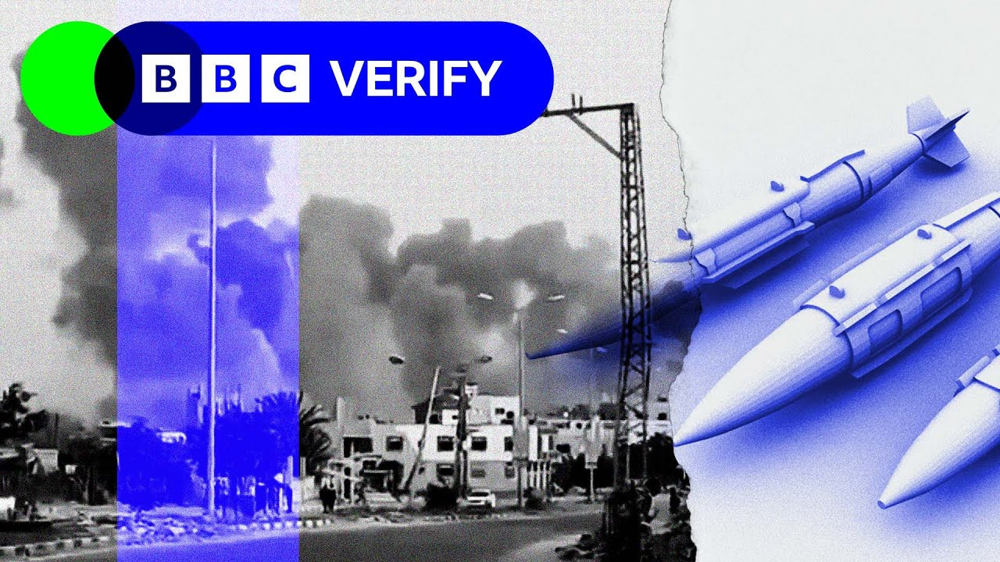

【以色列空袭加沙欧洲医院：BBC核查调查 | BBC新闻】
Summary: BBC Verify investigates the Israeli airstrike on Gaza's European Hospital, analyzing security footage, survivor accounts, and expert opinions to assess the attack's legality and impact.
摘要： BBC核查调查以色列对加沙欧洲医院的空袭，通过分析监控录像、幸存者叙述和专家意见，评估袭击的合法性和影响。

⏱️ Estimated Reading Time: 17 min
It's 6:19 p.m. in Carunis, Southern Gaza, and this is the courtyard of the European hospital.
下午6点19分，加沙南部卡鲁尼斯的欧洲医院庭院。
Security camera footage overlooks a wide paved area where ambulances are parked.
监控画面俯瞰一片宽阔的铺砌区域，停放着救护车。
A woman walks with a young boy, then pauses to speak with another.
一名妇女带着小男孩走过，停下来与另一人交谈。
In the distance is the hospital's emergency entrance.
远处是医院的急诊入口。
Men rest on plastic chairs along the curbside.
男人们坐在路边的塑料椅上休息。
Others walk by.
其他人走过。
It seems calm.
一切显得平静。
It's another day at one of the last functioning hospitals in Gaza.
这是加沙最后几家仍在运作的医院的寻常一天。
There's no audio on the CCTV footage, but in this moment, there are no visible signs of what's about to happen.
监控没有声音，但此刻没有任何迹象预示即将发生的事。
Moments later, something changes.
片刻之后，情况突变。
People look up.
人们抬头张望。
Some cover their ears.
有人捂住耳朵。
Others start to run.
其他人开始奔跑。
Israeli air strikes target the hospital.
以色列空袭击中医院。
A fireball engulfs the courtyard.
火球吞没了庭院。
The force of the blast sends a man's body flying towards the camera.
爆炸的冲击力将一名男子抛向镜头。
Then everything fades into a dense cloud of dust and debris.
随后一切被浓密的尘埃和碎片笼罩。
And this is what the blast leaves behind.
这是爆炸后的场景。
A man who had been sitting on a plastic chair moments earlier scrambles to his feet and stumbles through the wreckage to escape.
先前坐在塑料椅上的男子挣扎起身，踉跄穿过废墟逃离。
A fire continues to burn.
大火持续燃烧。
The ground then buckles and a section of the courtyard collapses inward and a large crater begins to form where the strike hit.
地面塌陷，部分庭院向内坍塌，空袭处形成巨大弹坑。
Men, women, and children flee the scene, desperately trying to find safety.
男女老少逃离现场，拼命寻找安全之处。
Dr. Tom Potakar, a British surgeon, was inside the hospital when it was hit.
英国外科医生汤姆·波塔卡尔博士当时正在医院内。
Absolutely massive strike on EGH hospital.
欧洲医院遭到极其猛烈的空袭。
He's right in front of the emergency room.
他就在急诊室正前方。
People ran on the ground.
人们在地上奔跑。
He's been to Gaza 16 times to treat patients as a consultant plastic surgeon.
作为整形外科顾问，他曾16次赴加沙救治患者。
He's going up towards He filmed this on his phone just moments after the blast.
爆炸后片刻，他用手机拍下这一幕。
This is a corridor going down to the main theaters.
这是通往主手术室的走廊。
I've got a friend.
我有个朋友。
I then ran back through the um in through the emergency department and down the main corridor.
我随后穿过急诊部跑回主走廊。
There was quite a lot of damage to the corridor.
走廊损毁严重。
You could smell the kind of acid bitter sort of smoke.
能闻到刺鼻的酸苦烟雾。
Um I rushed out of the uh room down the stairs and out into this courtyard.
我冲出房间，下楼跑进这个庭院。
Um there was black smoke and fumes rising up from directly in front of the entrance.
入口正前方腾起黑烟和 fumes。
Uh immediately after the explosion, there was just a huge amount of screaming and shouting.
爆炸刚过，四周充满尖叫和呼喊。
At least 28 people were killed and dozens were injured, according to Gaza's Hamas run civil defense agency.
据加沙哈马斯管理的民防机构称，至少28人死亡，数十人受伤。
The Israeli army said they were targeting a Hamas command and control center beneath the hospital.
以色列军方称其目标是医院地下的哈马斯指挥控制中心。
It didn't provide evidence of this to BBC Verify when requested.
但应BBC核查要求时未提供相关证据。
A number of patients had been waiting to be evacuated out of Gaza for treatment.
多名患者正等待撤离加沙接受治疗。
A poster invited journalists to cover the event at the hospital.
海报邀请记者报道医院活动。
One freelance journalist working for the BBC was filming interviews inside the hospital grounds at the time of the attack.
袭击发生时，一名为BBC工作的自由记者正在院内拍摄采访。
The journalist was injured.
该记者受伤。
We're not naming him for his own safety.
出于安全考虑不公开其姓名。
The World Health Organization staff were also at the hospital waiting to evacuate patients.
世界卫生组织工作人员也在医院等待转移患者。
It told BBC verified that the Israeli military body, the coordination and liaison administration for Gaza was notified in advance about the evacuation.
该组织向BBC核查证实，已提前通知以色列军方加沙协调联络部门有关撤离计划。
The Israeli body was told in advance about the staff involved, the expected arrival and departure times to and from the hospital, and the number of patients being transferred.
以方提前获知参与人员名单、预计往返医院时间及转运患者数量。
One mother was describing her son's treatment as the strikes unfolded.
空袭发生时，一位母亲正在描述儿子的治疗情况。
The WHO says it received no communication about the attack from the Israeli body before the bombing began.
世卫组织表示轰炸前未收到以方任何袭击通知。
Was there any indication that that the hospital would be a target?
是否有迹象表明医院会成为目标？
Did you receive any evacuation orders?
你们收到撤离命令了吗？
Uh did you have any prior warning?
有过任何预警吗？
No.
没有。
I mean, I'm talking as as a as a clinician, as a humanitarian worker, a surgeon working there.
我以临床医生、人道工作者和外科医生的身份回答。
No, we we had absolutely no warning whatsoever.
我们完全没有收到任何预警。
BBC Verify also found no evidence of an evacuation order issued for the European hospital complex between the 18th of March when Israel restarted fighting after the ceasefire and the 13th of May.
BBC核查发现，自3月18日以色列停火后重启战斗至5月13日期间，无证据显示欧洲医院收到过撤离令。
Sir Jeffrey Nice is a British barister and former prosecutor for the UN in the Hague of Slodon Milosvich, former president of Serbia.
杰弗里·尼斯爵士是英国律师，曾任联合国前南斯拉夫问题国际法庭检察官。
There are many ways in which hospital facilities, patients, doctors and so on uh enjoy special protection and one of the ways they enjoy protect extra protection is under international humanitarian law warnings have to be given and so if no warning was given uh it's even harder for Israel to assert that this was a legitimate attack on a hospital.
医院设施、患者和医生等受国际人道法特别保护，其中要求必须发出警告。若未发警告，以色列更难证明袭击医院的合法性。
This was filmed on Salahadin road about 500 meters from the hospital.
这段视频拍摄于距医院约500米的萨拉丁路。
The video captures multiple explosions at least 13 in total.
视频记录至少13次爆炸。
We can show you 11 of them here.
此处展示其中11次。
Back at the courtyard, CCTV captures the moment three bombs land in a row.
庭院监控拍到三枚炸弹接连爆炸的瞬间。
Details about the number of strikes in total vary.
关于总袭击次数的说法不一。
BBC Verify analysis identifies at least 13 damage sites at the hospital complex.
BBC核查分析确认医院建筑群至少13处损毁点。
That includes a large crater that nearly swallows a bus, which the World Health Organization said it planned to use for medical evacuations.
包括一个几乎吞噬巴士的弹坑，世卫组织称该巴士原计划用于医疗撤离。
Two more destroyed a road leading to the hospital, and another in a green space between two hospital building wings.
另有两次袭击摧毁通往医院的道路，还有一次发生在两栋院楼间的绿地。
The Israeli military told BBC Verify that it was targeting a Hamas command and control center beneath the European hospital and published aerial surveillance video.
以色列军方告诉BBC核查其目标是欧洲医院地下的哈马斯指挥中心，并公布空中监视视频。
The footage highlighted a building marked as the European Hospital, but it's incorrect.
视频突出显示标为"欧洲医院"的建筑，但实为错误。
It's actually a school building nearby, 215 m away.
实际是215米外的一所学校。
When asked about the discrepancy, the IDF confirmed to BBC Verify that the area marked was not the hospital itself.
被问及差异时，以色列国防军向BBC核查确认标记区域非医院本体。
Israeli Prime Minister Benjamin Netanyahu said that Israel had most likely killed Hamas commander Muhammad Sinoir without providing details.
以色列总理内塔尼亚胡称以军很可能击毙哈马斯指挥官穆罕默德·西诺尔，但未提供细节。
Local Israeli media had reported that he was the intended target of the attack on the European hospital at the time, but the Israeli army didn't confirm this.
以色列当地媒体曾报道他是欧洲医院袭击的目标，但以军未予证实。
Multiple legal experts told BBC Verify that the nature of the Israeli strikes raised serious concerns about their legality.
多名法律专家告诉BBC核查，以军空袭性质引发对其合法性的严重质疑。
Really, the question of whether this strike was lawful has three parts.
判断此次袭击是否合法需解答三个问题。
So, the first is whether there was a command and control center being used by Hamas within this hospital.
第一，医院内是否存在哈马斯使用的指挥中心。
If there was and if that can be shown by Israel to be true, the strike wasn't necessarily lawful.
即使存在且以方能证明，袭击也未必合法。
We then have to ask two further questions.
还需追问两点。
First, we have to ask, did Israel carry out sufficient precautions to warn the civilians in the hospital of the impending attack so that they could flee?
首先，以军是否采取充分预警措施让院内平民撤离。
And the second question, even if they did carry out those precautions, was the expected harm to the civilian population proportionate to the military advantage that Israel expected to gain from this particular attack?
其次，即便采取预警，对平民的预期伤害是否与以军预期军事优势成比例。
And it's hard to imagine that an attack against a hospital within Gaza at the moment could ever be proportionate.
很难想象当前对加沙医院的袭击能符合比例原则。
This visual evidence from the strike is significant.
空袭的影像证据至关重要。
Numerous experts have told BBC Verify that it all points to one type of weapon, bunker buster bombs.
多名专家告诉BBC核查，所有迹象指向一种武器——掩体炸弹。
You can think of a bunker buster almost as being a needle and that it's a very long, very thin object.
掩体炸弹形似长针，细长物体。
They're designed to enter the surface of the earth to go somewhere between 6 and 30 m underground.
设计可钻入地下6至30米。
And after they've entered the earth is when an explosion happens to destroy something underneath.
钻地后引爆摧毁地下目标。
And they said these bombs are used because of how precise they are for underground targets.
专家称因其对地下目标的精确性而被使用。
The blast suggests those impacts have uh been associated with a bunker buster or a penetrating munition because the the blast wave is so contained.
爆炸特征显示与掩体炸弹或钻地弹药相关，因冲击波极为集中。
Are you saying that what you're seeing on this video shows that there was a tunnel underneath the ground?
视频是否显示地下存在隧道？
strongly suggests that there's something underneath.
强烈暗示地下存在结构。
Now, whether that's a you know, a tunnel or a bunker or a storage facility or even just a pipeline or some other void, you know, doesn't necessarily mean it was um you know, any particular type of structure, but the way in which the the earth collapses down there.
可能是隧道、掩体、仓库甚至管道，地面塌陷方式表明存在空洞。
The fact that there's fire propagating through from some source suggests that there's probably a void under there.
火焰从某处蔓延表明地下可能存在空间。
To me, this suggests that there was fairly high Israeli intelligence about what the structure underground looked like at these areas, but there might have been a lot of uncertainty about exactly where the intended target was.
这表明以军掌握该区域地下结构情报，但对具体目标位置可能不确定。
The Israeli army told BBC Verify it used precise munitions, aerial surveillance, and additional intelligence to reduce the risk of harm to both civilians and civilian infrastructure.
以军告诉BBC核查其使用精确弹药、空中监视和额外情报降低对平民和民用设施的风险。
We spoke to Dr. Daphne Richmond Barack, an expert on underground warfare who teaches at Reichman University in Israel.
我们采访以色列莱赫曼大学地下战专家达芙妮·里士满·巴拉克博士。
The Kamas tunnel network is the most sophisticated and intricated tunnel system that has ever been encountered in the history of warfare.
卡马斯隧道网络是战争史上最精密复杂的隧道系统。
So just as it took a long time to create this military infrastructure underground, it will take a long time to undo it.
正如其建造耗时漫长，摧毁同样需要时间。
BBC Verify can't confirm what underground structures, if any, these bunker busters hit.
BBC核查无法确认掩体炸弹击中了何种地下结构（如有）。
But Sir Jeffrey Nice said even if there were, it still may not be sufficient justification for the Israeli army and may constitute a war crime.
但杰弗里·尼斯爵士表示即便存在，也不足以证明以军行动正当，可能构成战争罪。
So is there any evidence that this hospital, these medical workers uh let alone the the the patients in the hospital had anything active to do with allowing there to be uh a Hamas facility under the ground?
是否有证据表明医院、医护人员或患者主动允许地下存在哈马斯设施？
Now if there is no such evidence then the hospital retains its protected status as do all the people working within it.
若无此类证据，医院及其工作人员应受保护。
International humanitarian law says the doubt has to be resolved in favor of the protection of the um aid workers the medical workers and so on.
国际人道法规定，存疑时应优先保护医疗工作者等人员。
The assault didn't end that night.
袭击并未那晚结束。
The next day Dr. Protocol told us work was underway to repair roads so emergency vehicles could reach the hospital.
次日波塔卡尔博士告知正抢修道路以便急救车抵达医院。
BBC Verify confirmed at least one other strike hit the hospital grounds the following day where a bulldozer was hit.
BBC核查确认次日医院场地再遭至少一次袭击，一台推土机被击中。
The Israeli army told us it struck additional targets.
以军称其打击了额外目标。
The BBC didn't find any evidence of an evacuation order for the hospital that day.
BBC未发现当日医院收到撤离令的证据。
The engineers had come in in the morning and done a sort of full assessment of the damage and uh identified that there was quite a lot not just of structural damage but also to the water supply.
工程师早晨进场全面评估损失，发现不仅结构损毁严重，供水系统也遭破坏。
Uh there was no water running for most of the time.
大部分时间断水。
Um even in the intensive care unit um I think some of the power had been disrupted as well and clearly a hospital that has no running water you know cannot function as a hospital.
重症监护室也断电，断水医院显然无法运作。
The UN says their office has documented at least 686 attacks impacting healthcare in the Gaza Strip since war erupted in October 2023 following the deadly Hamasled attacks on Israel.
联合国称自2023年10月哈马斯袭击以色列引发战争以来，已记录加沙至少686起医疗系统遭袭事件。
And they say the health care system in Gaza has been decimated.
加沙医疗系统已遭重创。
Tom, can you hear me or is it just your video that's gone?
汤姆，能听到吗？还是视频断了？
He's now moved to the NASA hospital in KH Ununice.
他已转移至KH Ununice的NASA医院。
You know, I have colleagues that have been evacuated eight 10 times now from one place to another.
我有同事已被转移8到10次。
Uh the the actual cities like here in Kunis, you know, it looks like one of the cities after the Second World War.
库尼斯等城市宛如二战后的废墟。
Israel resumed air strikes in March following the collapse of a fragile ceasefire which lasted 2 months.
以色列在持续两个月的脆弱停火破裂后，于3月重启空袭。
It announced a new offensive in May amid the deadliest wave of strikes in Gaza in months.
5月宣布新攻势，期间发动数月来加沙最致命空袭。
Leaders of the UK, Canada, and France released a joint statement warning the Israeli government it must end its egregious actions and immediately allow humanitarian aid to enter Gaza.
英加法领导人联合声明警告以色列政府必须停止恶劣行径，立即允许人道援助进入加沙。
Israel launched a military campaign in Gaza in response to Hamas's crossber attack on the 7th of October in which about 1,200 people were killed and 251 were taken hostage.
以色列军事行动是对哈马斯10月7日跨境袭击的回应，该袭击导致约1200人死亡，251人被劫持。
Since then, at least 53,000 people have been killed in Gaza, according to the Hamas run health ministry.
哈马斯管理的卫生部称此后加沙至少5.3万人死亡。